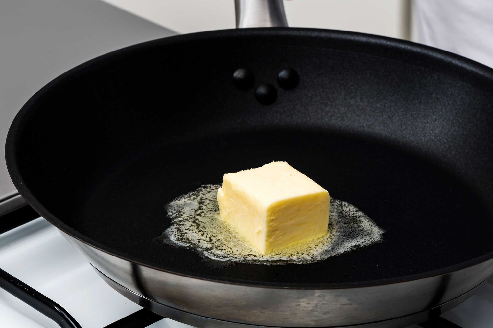

Step 1: Gather Ingredients

Prepare 1 tablespoon of unsalted butter, 2 eggs, Kosher salt, and freshly ground black pepper.
Step 2: Melt the Butter
In a cast iron, carbon steel, or nonstick skillet, melt butter over medium heat until lightly foaming, tilting the pan to evenly distribute the butter.
Step 3: Add the Egg and Season
Carefully break eggs into the skillet, season with salt, and cover with a glass lid.
Step 4: Cook the Egg
Cook until the whites are just set (about 1 minute 30 seconds). Remove the lid, then continue to cook for another 1 minute 30 seconds or until the whites are completely set and the yolks remain runny.
Step 5: Serve with a Smile
Transfer to a plate, season to taste with salt and pepper, and serve immediately. :)